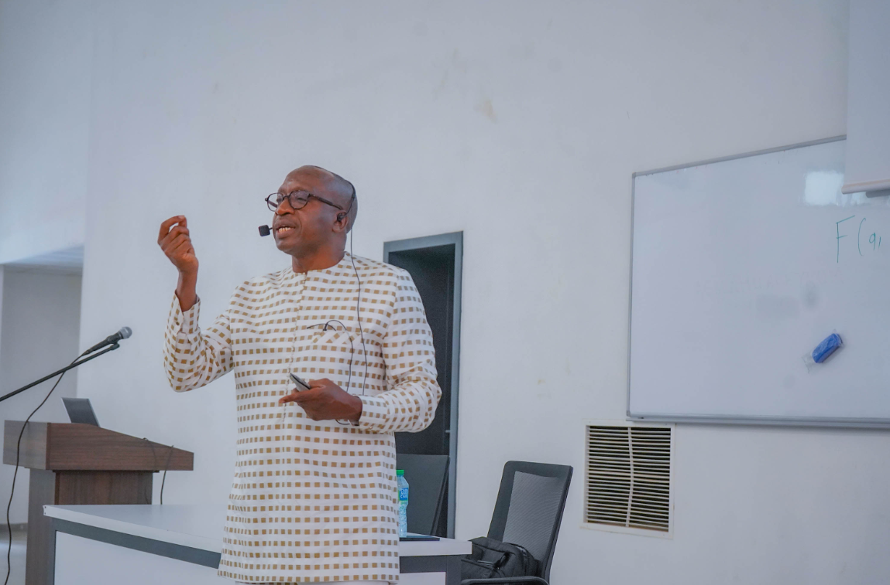
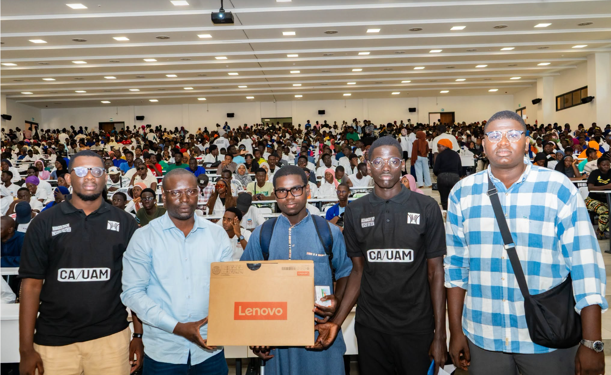
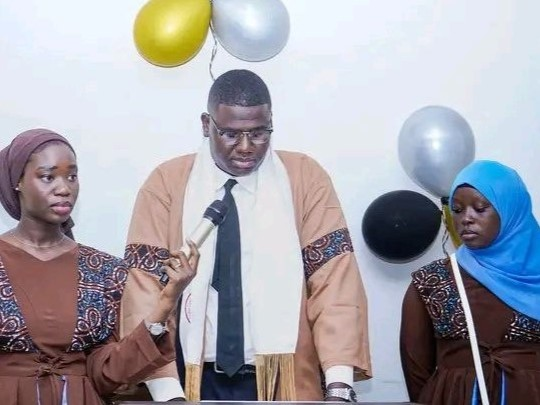
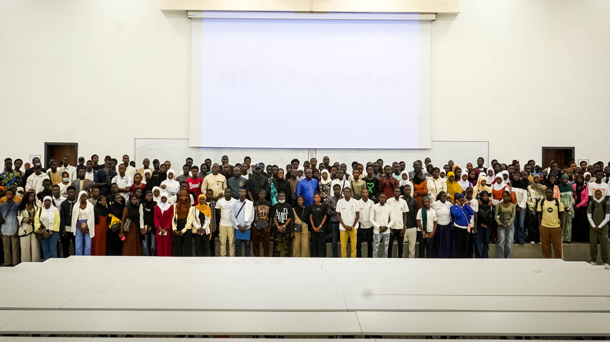
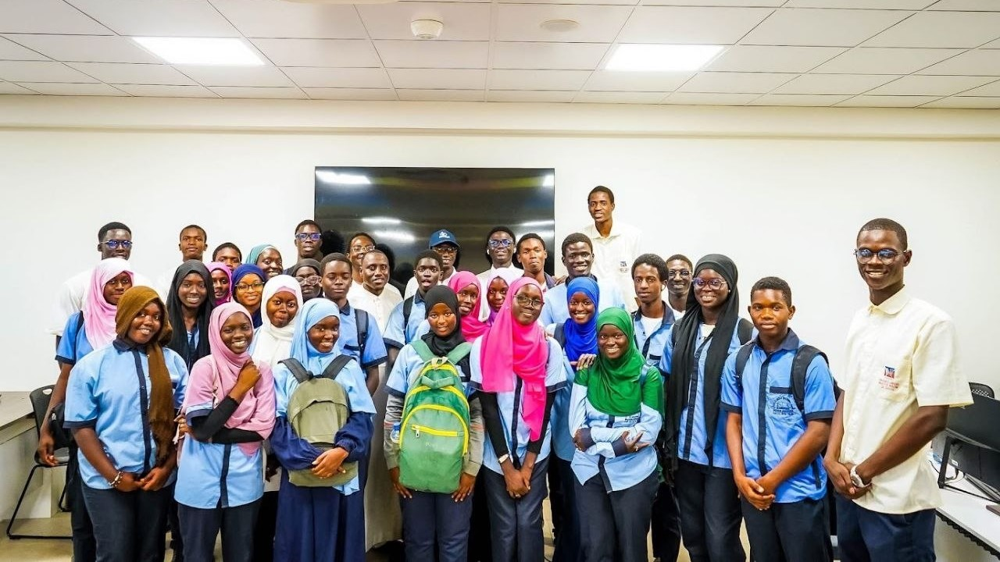

Mai 2025
Grande conférence à l’UFR STA
Pr Abdou SENE magnifie les mathématiques comme levier de développement communautaire.
L’UFR Sciences et Technologies Avancées (STA) est une composante de l’Université Amadou Mahtar Mbow dédiée à l’enseignement, à la recherche et à l’innovation dans les domaines des sciences, de l’ingénierie, de l’informatique et des nouvelles technologies.
En savoir plusNous nous engageons à former des talents compétents, innovants et responsables pour répondre aux défis scientifiques et technologiques du monde de demain.
Excellence • Innovation • Recherche
Étudiants
Départements
Enseignants
Partenaires

Pr Abdou SENE magnifie les mathématiques comme levier de développement communautaire.

Tous les étudiants ont récupéré leurs machines afin de poursuivre les cours en ligne.

Présentation des projets innovants des étudiants et remise de récompenses aux majors de chaque filière et promotion.

Nouvelle année académique, il s'agit de la 3ème promotion de la STA.

Visite Pédagogique des élèves du Lycée Yeumbeul.